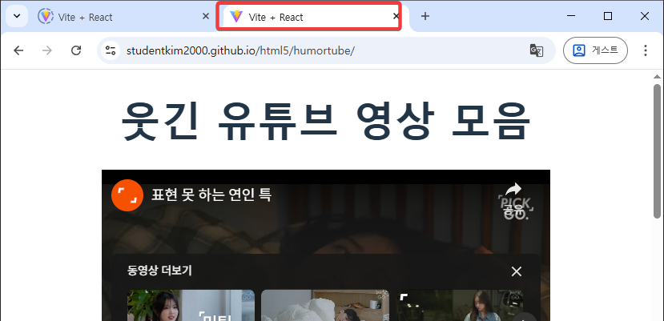
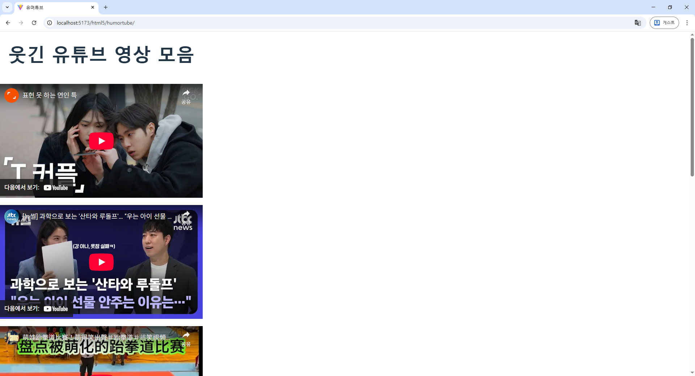
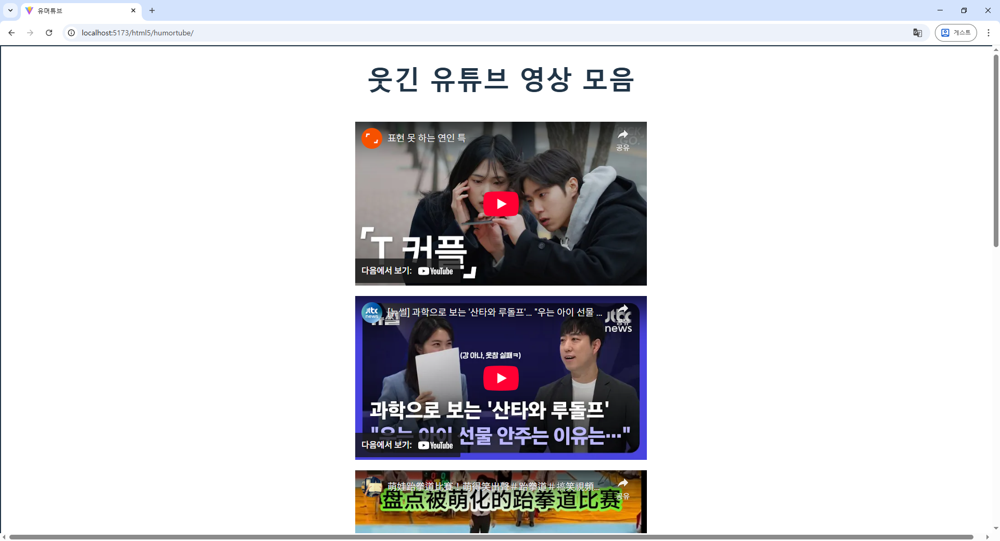
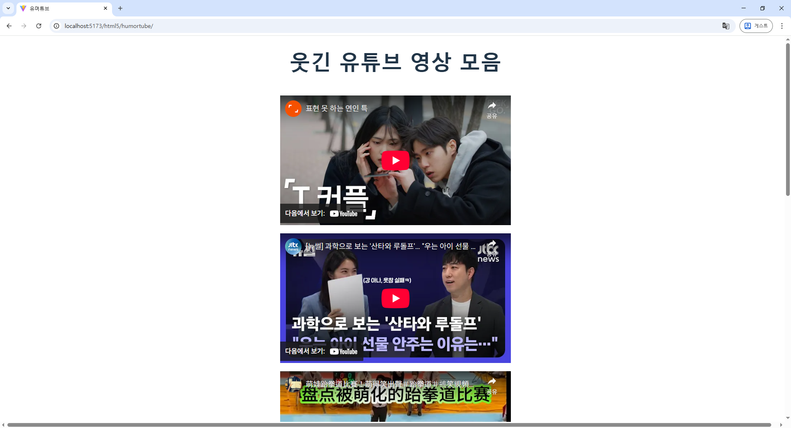

기타, 정리
웹브라우저의 제목 바꾸기

이제 어느 정도 기능이 되니 저 부분이 눈에 들어온다.
웹브라우저의 제목은 프로젝트 폴더의 index.html 파일을 수정해 바꿀 수 있다.

저 title 태그 부분을 바꾸면 된다.
// index.html
<!doctype html>
<html lang="en">
<head>
<meta charset="UTF-8" />
<link rel="icon" type="image/svg+xml" href="/vite.svg" />
<meta name="viewport" content="width=device-width, initial-scale=1.0" />
<title>유머튜브</title>
</head>
<body>
<div id="root"></div>
<script type="module" src="/src/main.jsx"></script>
</body>
</html>

레이아웃 조정
먼저 pc에서 본 모습은 다음과 같다.

옆으로 길게 뻗어나가는 중이다.
우리는 세로로 길게 나가길 원했는데.
이런 화면에 보여지는 모양, 레이아웃은 css를 통해 바로 잡는다.
우리는 화면에 보여지는 아이템들 전체를 감싸는 div를 하나 가지고 있고, 그 div에 center_div 클래스를 할당해 놓았다.
App.jsx 파일을 보면,
<div className="center_div">
로 되어 있다. 세로로 길게 내려가게 하려면 이 center_div를 수정하면 된다.
index.css 파일의 맨 끝에 있는 .center_div를 다음과 같이 수정하자.
.center_div
{
display: flex;
flex-direction: column;
}
이렇게 하면 아래로 길게 배열하는 모양이 된다.

다음은 이 div 안에 있는 요소들간의 간격을 좀 벌리자. gap을 설정하면 된다.
.center_div
{
display: flex;
flex-direction: column;
gap: 20px;
}

이 div안의 모든 요소들의 간격이 다 20픽셀씩 떨어졌다.
이제 이걸 가운데로 정렬해 보자.
align-items: center; 를 추가해 주면 된다.
.center_div
{
display: flex;
flex-direction: column;
gap: 20px;
align-items: center;
}

어라, 아무런 변화가 없다. 가운데 정렬을 헀을 때 아무런 변화가 없으면 현재 이 div의 크기가 어떤지 확인해야 한다.
div의 크기를 보려면 테두리를 그려보는게 가장 편하다.
border: 2px solid; 를 추가한다.
.center_div
{
display: flex;
flex-direction: column;
gap: 20px;
align-items: center;
border: 2px solid;
}

테두리 그려진 것을 보면 매우 작은 영역 안에서 가운데 정렬을 하고 있었다는 것을 알 수 있다. 저렿게 작은 영역 안에서 가운데 정렬을 해 봤자 아무 소용이 없다.
그러니 폭을 화면의 전체 영역으로 넓히자.
width: 100vw를 주면 된다.
vw는 ViewPoint Width의 약자이고, 화면에 보이는 영역의 넓이를 뜻한다. 100vw는 ViewPoint Width를 100% 사용하라는 뜻이다. 만약 50vw라고 주면 화면에 보이는 영역의 50%를 사용하라는 뜻이 된다.
.center_div
{
display: flex;
flex-direction: column;
gap: 20px;
align-items: center;
border: 2px solid;
width: 100vw;
}

사용할 영역을 화면에 보이는 전체 영역으로 주니 가운데 정렬(align-items: center;)가 제대로 효과를 발휘한다.
이제 영역 크기를 확인하기 위해 사용한 border 관련 설정은 지워버리자.
.center_div
{
display: flex;
flex-direction: column;
gap: 20px;
align-items: center;
width: 100vw;
}
